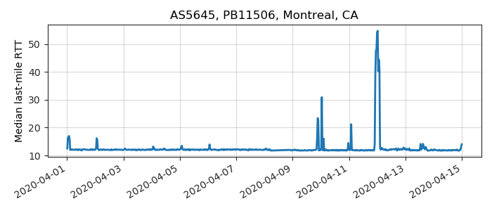
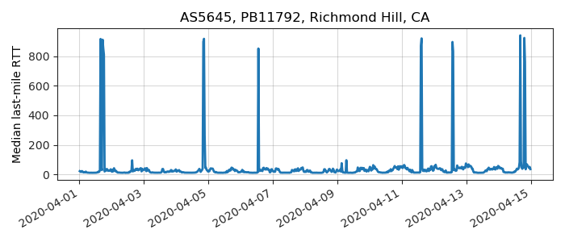
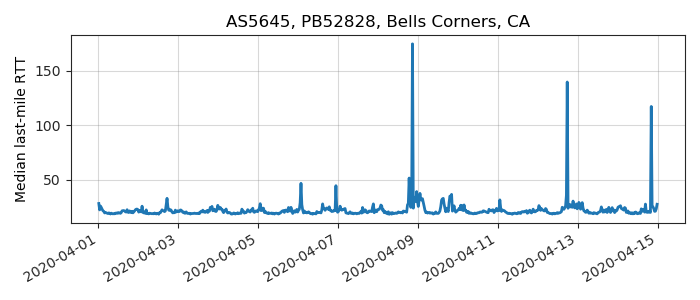

---
layout: default
title: Last-mile delay survey / 2020-04-01 / AS5645
---
AS5645, TEKSAVVY, CA
Summary
- Daily last-mile fluctuations: mild
- Number of probes: 21
- APNIC eyeball rank: 562
- Daily fluctuations: True
- Main frequency: 0.0417
- Average peak-to-peak amplitude: 1.96ms
Aggregated last-mile queuing delay
Periodogram
24H profile
Probes' last-mile RTT
- 
- 

- 